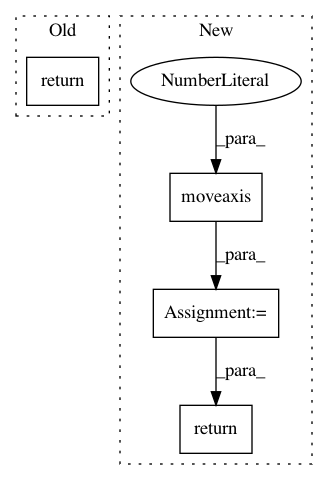

7b52dc0c4647e66a3653f3d6c974c1dc1f7fde53,keras_retinanet/utils/image.py,,apply_transform,#Any#Any#Any#,107
Before Change
def apply_transform(transform, image, params):
Wrapper around keras.preprocessing.image.apply_transform using TransformParameters.
return keras.preprocessing.image.apply_transform(
image,
transform,
channel_axis = params.channel_axis,
fill_mode = params.fill_mode,
cval = params.cval
)
def resize_image(img, min_side=600, max_side=1024):
(rows, cols, _) = img.shape
After Change
// Merge the channels back into an image.
image = np.stack(channels, axis=0)
image = np.moveaxis(image, 0, params.channel_axis)
return image
def resize_image(img, min_side=600, max_side=1024):
(rows, cols, _) = img.shape
In pattern: SUPERPATTERN
Frequency: 3
Non-data size: 4
Instances
Project Name: fizyr/keras-retinanet
Commit Name: 7b52dc0c4647e66a3653f3d6c974c1dc1f7fde53
Time: 2018-01-27
Author: maarten@de-vri.es
File Name: keras_retinanet/utils/image.py
Class Name:
Method Name: apply_transform
Project Name: Shmuma/ptan
Commit Name: 8ac327667161ae6e2c37f88ff3782e6591c19b48
Time: 2017-10-08
Author: max.lapan@gmail.com
File Name: ptan/common/wrappers.py
Class Name: PreprocessImage
Method Name: _observation
Project Name: NeuromorphicProcessorProject/snn_toolbox
Commit Name: 8db6d859eab1d4ccddafa48f2abc602c4eac0e42
Time: 2020-07-02
Author: bodo.rueckauer@gmail.com
File Name: snntoolbox/datasets/aedat/DVSIterator.py
Class Name:
Method Name: get_frames_from_sequence